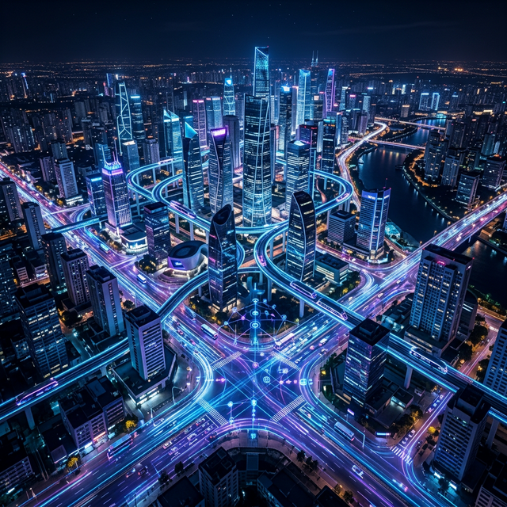

MWC Barcelona 2026 once again showed that intelligent mobility and connected cities remain a central axis of digital transformation. But this time the message was different: it is no longer enough to talk about urban innovation in abstract terms. The priority is now solving concrete problems through data, artificial intelligence and coordinated connectivity.
One of the official sessions of the event clearly stated that AI is already transforming mobility in the present, not in a distant future. The impact extends to transport platforms, logistics, shared mobility, drones, multimodal networks and complex urban operations.
From visible infrastructure to management capability
This evolution is important because it shifts the focus from visible infrastructure to management capability. The smart cities of MWC 2026 are understood less as showcase projects and more as operational platforms capable of integrating real-time data, analysing situations and optimising decisions.
In mobility, this translates into more coordinated systems, greater traceability, faster responses and better use of resources. For administrations and operators, the key is no longer just to digitise, but to build a technological base that allows precise action on traffic, services, fleets and urban planning.
What was seen in Barcelona points to a clear conclusion: the smart city matures when it stops focusing on sensors and screens, and begins to rely on intelligence applied to daily operations.
Sources
MWC Barcelona official agenda: session on AI and mobility transformation.
MWC Barcelona Connected Industries: Smart Mobility focus within the congress.